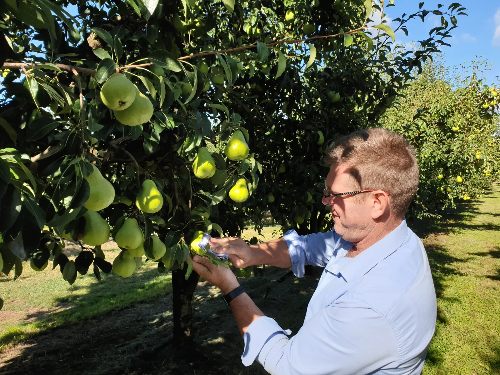

Where is the crop now?
Bring the current reports and sampling details. Tell us about the crop and variety, its growth stage, recent conditions and what you need to understand.
Make sense of the test results you already have.
Bring your existing reports and tell us what you need to understand. Hybrid-Ag reviews the results alongside your crop and paddock or block history, then discusses what to do next.
Soil, plant, water and produce tests measure different things. The audit compares relevant results while keeping their sampling dates, locations and methods clear.
No single number creates an automatic diagnosis or product recommendation.
Soil conditions and Nutrient levels in the sampled area.
02Leaf and tissueNutrient levels in the sampled plant tissue at the recorded growth stage.
03Differential sapSeparate young and old tissue results, compared with each other and any repeat samples.
04WaterWater quality for irrigation, fertigation and foliar application.
05ProduceCrop composition, harvest volume, Nutrient removal and quality measures.
Crop stage, recent conditions and production history help explain the results. The team also needs to know what you are aiming to achieve.
Bring the current reports and sampling details. Tell us about the crop and variety, its growth stage, recent conditions and what you need to understand.
Compare previous results with changes through the season, applications, crop response and differences between paddocks, blocks or zones.
Discuss what needs attention now, what can wait and whether further testing or observations would help.

The audit explains the available results for your crop and identifies any further information needed. Measured results are kept separate from their interpretation.
The team considers the crop stage and the quality or production measures relevant to your business.
 BlocksHorticultureMarketable fruit, pack-out, grade, condition and shelf life.
BlocksHorticultureMarketable fruit, pack-out, grade, condition and shelf life.
 Paddocks or blocksSmall CropMarketable yield, specification, uniformity, timing and quality.
Paddocks or blocksSmall CropMarketable yield, specification, uniformity, timing and quality.
 PaddocksBroadacre & PastureYield, grain quality, Nutrient efficiency and rotation position.
PaddocksBroadacre & PastureYield, grain quality, Nutrient efficiency and rotation position.
 BlocksViticultureCrop and canopy, maturity, specification, condition and harvest timing.
BlocksViticultureCrop and canopy, maturity, specification, condition and harvest timing.
The Apple and Cherry sample programs show how a nutrition recommendation can be set out across a season. These website versions are review drafts, not approved application guidance. Discuss them with the team before considering them for your orchard.
View all crop programsThe team reviews your request and explains which reports to share before the audit begins.
Tell us which soil, plant, water or produce results exist and the crop question behind them. The team will explain how to share the relevant files.
Bring existing resultsTell us about your crop and what you need to understand. The team will confirm which test or combination of tests is suitable.
Ask the team where to startThe team discusses the findings with you, including what the results show and what remains uncertain. That discussion helps establish a practical recommendation for your crop.
Meet the team